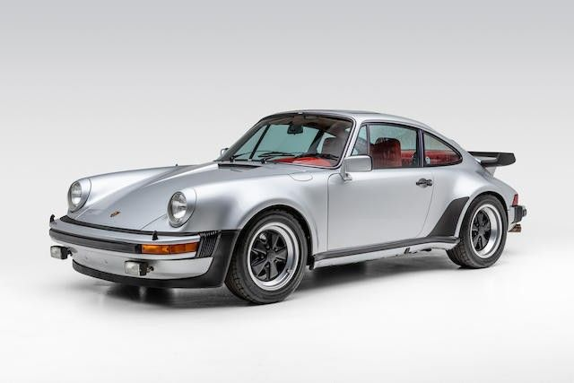
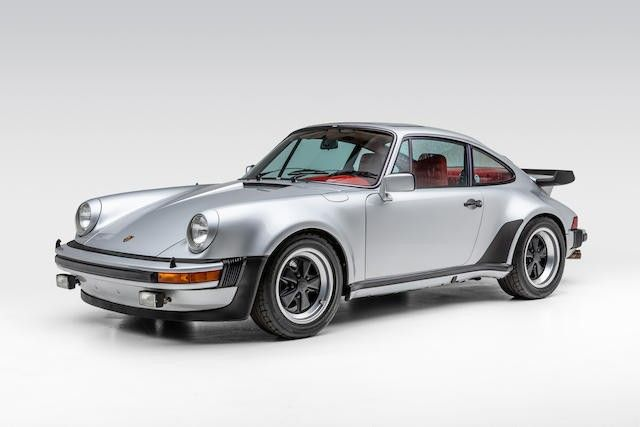

911 Turbo S
ABOUT PORSCHE 911 TURBO S
Porsche 911 TURBO S
Mansory, a foreign luxury car customization firm founded in 1989 by Kourosh Mansory, unveiled their upgraded Porsche 911 Turbo S Coupe dubbed the P9LM EVO 900. The decked-out sportscar features various high-end fittings including premium leather and carbon accents, as well as digital and performance upgrades.
Most prominent, the body of the P9LM EVO 900 boasts more aggressive, race-inspired, features than the base Porsche 911 Turbo S. Mansory has employed their team of expert designers and mechanics to completely transform the Porsche into an unrecognizable supercar.
With more bells and whistles than a freight train, the P9LM pushes the limits of customization, modern tech, and performance. As such, Mansory allows for extensive customization on their vehicles, the P9LM included, allowing the customer to create a one-of-a-kind P9LM EVO 900 suited specifically to their tastes.
Sporting custom Mansory badges and carbon-forged body elements, the P9LM is hardly recognized as a Porsche, yet it bears the telltale curves and profile of the legendary German automaker, Porsche. The P9LM EVO 900 is special order only, with a limited production run of only 10 models.
ABOUT ENGINE PORSCHE 911 TURBO S
1. Engine & Performance
Engine Type: Twin-Turbocharged 3.8L Flat-6 (Boxer)
Max Power: 650 PS (478 kW) @ 6,750 rpm
Max Torque: 800 Nm @ 2,500–4,000 rpm
Transmission: 8-speed PDK automatic with Porsche Doppelkupplung
0–100 km/h (0–62 mph): 2.7 seconds (with Sport Chrono Package)
0–200 km/h (0–124 mph): 8.9 seconds
Top Speed: 330 km/h (205 mph)
Drivetrain: All-Wheel Drive (AWD) with Porsche Traction Management (PTM)
2. Dimensions & Weight
Length: 4,535 mm (178.5 in)
Width: 1,900 mm (74.8 in) (including mirrors)
Height: 1,303 mm (51.3 in)
Wheelbase: 2,450 mm (96.5 in)
Curb Weight (DIN): 1,640 kg (3,615 lbs)
3. Suspension & Brakes
Suspension: Porsche Active Suspension Management (PASM) with adaptive dampers
Front Brakes: Ceramic Composite Brakes (PCCB, optional) / Ventilated discs 420 mm
Rear Brakes: Ceramic Composite Brakes (PCCB, optional) / Ventilated discs 390 mm
Additional Feature: Porsche Dynamic Chassis Control (PDCC) for high-speed stability
4. Interior & Technology
Dashboard: 10.9-inch Porsche Communication Management (PCM)
Instrument Cluster: Digital display (customizable)
Driving Modes: Normal, Sport, Sport Plus, Individual
Connectivity: Apple CarPlay, Android Auto, WiFi hotspot
5. Safety Features
Porsche Stability Management (PSM)
Adaptive Cruise Control (optional)
Night Vision Assist (optional)
Lane Change Assist (optional)
.jpg)
.jpg)
 
